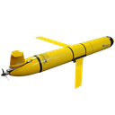
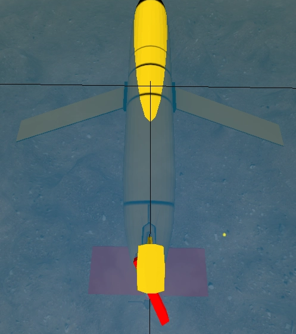
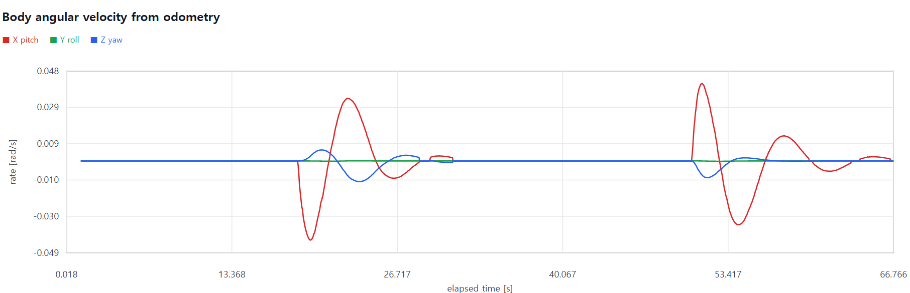
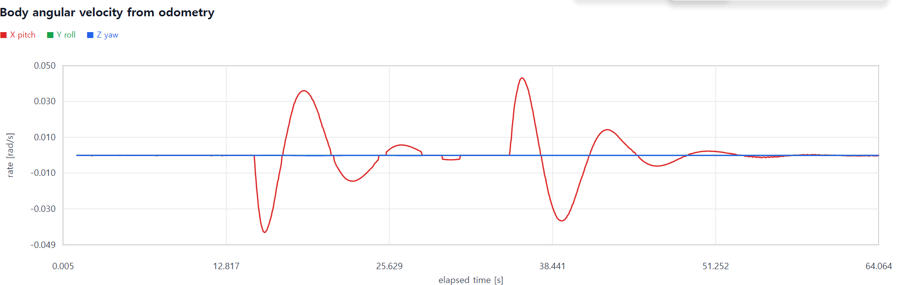
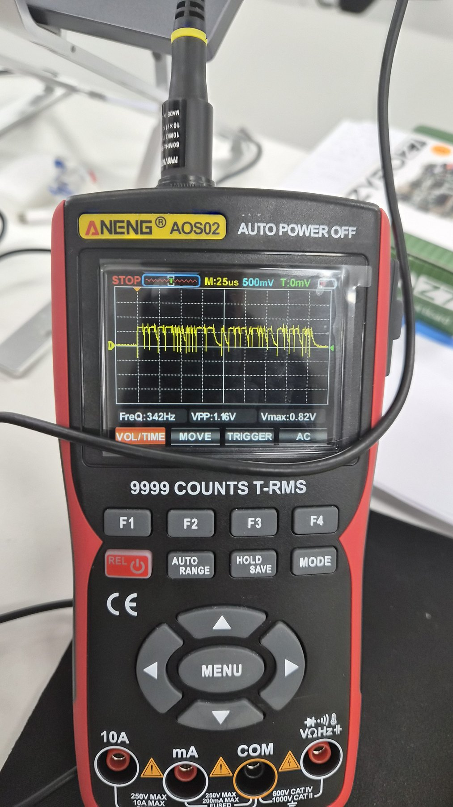
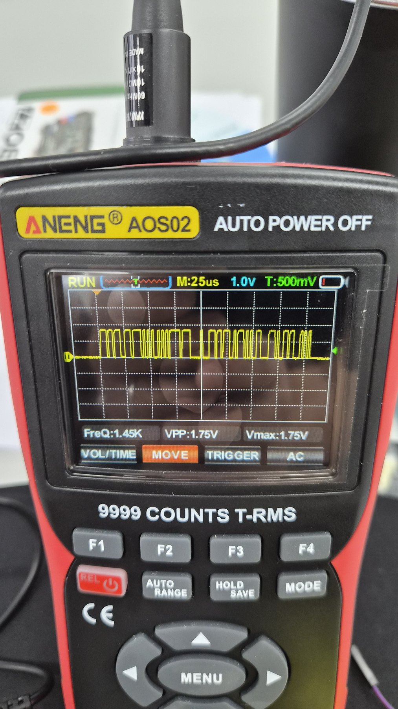

DAVE · ROS 2 · GAZEBO · 5인 팀 프로젝트
수중 유도·회피 시뮬레이션과
Controller-HILS
수중 유도·회피 알고리즘을 반복 시험할 SITL 환경을 구성했습니다. 공통환경 통합과 4-fin 위협 어뢰의 모델링·유도 제어를 맡았으며, 이후 제어 코드를 ESP32로 이식해 CAN 기반 Controller-HILS로 연결했습니다.
- 기간
- 2026.07 — 2026.09
- 팀 구성
- 5명, 어뢰·회피·제어 분담
- 담당
- 공통환경·위협 어뢰
- 기술
- C++, ROS 2, Gazebo, CAN, ESP32
DAVE 기반 시험 환경
DAVE의 수중 월드와 BlueROV2·Slocum 모델을 기반으로 공통 시험 환경을 구성했습니다.
모델의 형상·충돌체·관절과 유체역학 플러그인을 확인하고, BlueROV와 위협 어뢰의 상태·구동 명령을 ROS에서 주고받도록 연결했습니다.
원본 환경·모델: Field Robotics Lab의 Project DAVE. 아래 링크에서 소스와 ROS 2 문서를 확인할 수 있습니다.
- 01기존 자산 검토
SDF·DAE 파일과 플러그인을 확인해 모델의 좌표계와 구동 구조를 파악했습니다.
- 02기본 구동 검증
Gazebo thruster 토픽에 추력 명령을 보내 BlueROV 모델과 구동 인터페이스의 정상 반응을 검증했습니다.
- 03통합 기준 확정
ROS–Gazebo Bridge로 상태와 구동 명령을 연결하고, SITL을 보드 이식 전의 시험 기준으로 정했습니다.
동일한 환경에서 유도 방식에 따른 BlueROV 회피 반응을 비교했습니다. 모델 파라미터는 실측 어뢰 성능을 재현한 값이 아닌 SITL 시험용 설정입니다.
Slocum 기반 위협 어뢰 모델
Slocum에 후방 4-fin을 추가하고 큰 주익을 제거해 회피시험용 위협 어뢰로 수정했습니다.
상·하·좌·우 fin의 link·joint를 추가하고 각각 LiftDrag 플러그인을 연결했습니다. Blender에서 큰 주익과 연결부를 제거한 뒤 SDF에 반영했으며, 프로펠러의 Thruster와 4-fin 제어 구조를 연결했습니다.



- 01비표준 좌표계 분석
일반적인 +X 전방이 아니라 +Y 전방인 모델이어서 DAE, collision 장축, joint axis와 odometry 반응을 함께 대조했습니다.
- 02Fin 방향과 부호 검증
Top·Bottom fin은 yaw, Left·Right fin은 pitch를 만들도록 구성하고 각 fin에 작은 양·음 입력을 따로 적용해 회전 방향을 검증했습니다.
- 03물리 플러그인 통합
fin의 LiftDrag, 프로펠러의 Thruster와 joint 제어를 분리해 시험하고, 실제 수중시험값이 아닌 SITL 검증용 공학적 추정값임을 구분했습니다.
어뢰·회피 모듈 인터페이스
어뢰 모듈은 위치·자세·속도를 제공하고, 회피 모듈은 이를 받아 충돌을 예측하도록 인터페이스를 정했습니다.
초기에는 어뢰 모듈에 충돌 예측 기능까지 두려 했지만, 상대 기체의 회피 동작을 함께 가정해야 했습니다. 어뢰는 실시간 odometry를 제공하고, 회피 모듈이 자체 모델로 충돌을 예측하도록 역할을 나눴습니다.
01Gazebo 상태어뢰·BlueROV 위치와 자세
02실시간 Odometry공통 메시지와 좌표계
03회피 모듈자체 모델로 충돌 예측
04제어 명령추진기·Fin 동작 반영
ROS 입출력과 제어 계산을 분리해 팀원들이 필요한 상태·명령만 연결하도록 구성했습니다. 설치·빌드와 5단계 실행 명령을 정리해 반복 시험에 사용했습니다.
상태 수신 지연·CPU 사용률 개선
Odometry 수신 간격과 제어 노드 CPU 사용률을 측정해 센서 데이터 경로와 주기 대기 코드를 수정했습니다.
불필요한 1,000 Hz 경로 제거
사용하지 않는 JointState가 ROS–Gazebo 데이터 경로를 점유하면서 어뢰 odometry의 최대 수신 간격이 약 330 ms까지 늘어났습니다. 발행·브리지·구독 경로를 제거해 약 100 Hz 상태 입력과 최대 12 ms 간격으로 개선했습니다.
Busy-wait 제거
20 Hz 제어 주기를 기다리는 동안 한 코어를 계속 점유하던 구조를, 다음 주기까지 남은 시간만 대기하도록 변경했습니다. 같은 30초 유도 시험에서 CPU 사용률을 102.7%에서 2.4%로 낮추고 RTF(Real-Time Factor)를 약 0.62에서 1.00으로 회복했습니다.
330 → 12 msOdometry 최대 수신 간격
102.7 → 2.4%어뢰 제어 노드 CPU
0.62 → 1.00RTF
프로펠러 관성값 수정
직진 추력만 입력했는데도 pitch 변화와 함께 비정상적인 yaw가 발생했습니다. 프로펠러 축 관성값이 지나치게 커 회전 간 결합이 과장되는 것을 확인하고 값을 수정했습니다. 동일한 +50 N 시험에서 yaw 응답은 기존의 약 1/121로 줄었습니다.
원인 분석과 수정 값
프로펠러 각운동량과 기체 pitch 각속도의 결합으로 Z축 모멘트가 발생했습니다. SDF의 프로펠러 축 관성 iyy를 0.1에서 0.000625 kg·m²로 수정했습니다. 수정 뒤에도 pitch는 남았으며, 추력선과 무게중심의 높이 차이에서 발생하는 별도 모멘트로 구분했습니다.


SITL 유도 방식별
통합 검증
Simple Tracking으로 구현한 PP(Pure Pursuit, 순수 추종)와 PNG(Proportional Navigation Guidance, 비례항법 유도) 위협 조건을 각각 실행해 BlueROV의 회피 경로와 충돌 여부를 기록했습니다.
- 기능시험 Keyboard 모드에서 프로펠러와 4-fin의 방향·부호를 검증했습니다.
- 기본 추적 Simple Tracking으로 구현한 PP 방식에서 움직이는 BlueROV를 추종했습니다.
- 팀 통합시험 PP 방식 위협에서 BlueROV의 회피 동작을 기록했습니다.
- 한계 PNG 방식에서는 BlueROV가 대부분 피격되어 위협 유도법에 따라 회피 난이도가 크게 달라졌습니다.
이 통합시험은 SITL 환경에서 수행했으며, 명중률이나 회피 성공률을 통계적으로 산출한 시험은 아닙니다.
MANTA GitHub 저장소 ↗ESP32·CAN 기반 Controller-HILS
SITL 유도·회피 검증을 마친 뒤, ROS 2·Gazebo의 상태를 PC–ESP32 게이트웨이–CAN 제어기로 전달하고 ESP32에서 계산한 추력·4-fin 명령을 다시 Gazebo에 적용하는 양방향 Controller-HILS(Hardware-in-the-Loop Simulation) 시스템을 구성했습니다.
Classical CAN 2.0A 500 kbit/s 환경에서 Odometry 프레임의 분할·재조립, Simple Tracking·PNG 제어, E-stop과 통신 timeout 시 zero output 안전 동작을 구현했습니다. 현재는 상태 전달, 보드 제어 연산, 명령 반환과 Gazebo 구동기 반응까지 폐루프가 정상 동작하는 것을 확인했습니다.


두 파형은 1채널 오실로스코프의 연결 위치를 바꿔 각각 측정했습니다. 보드 제어 결과가 Gazebo 구동기로 반환되는 동작까지 확인했으며, 유도·회피 통합시험의 HILS 반복 검증은 남아 있습니다.